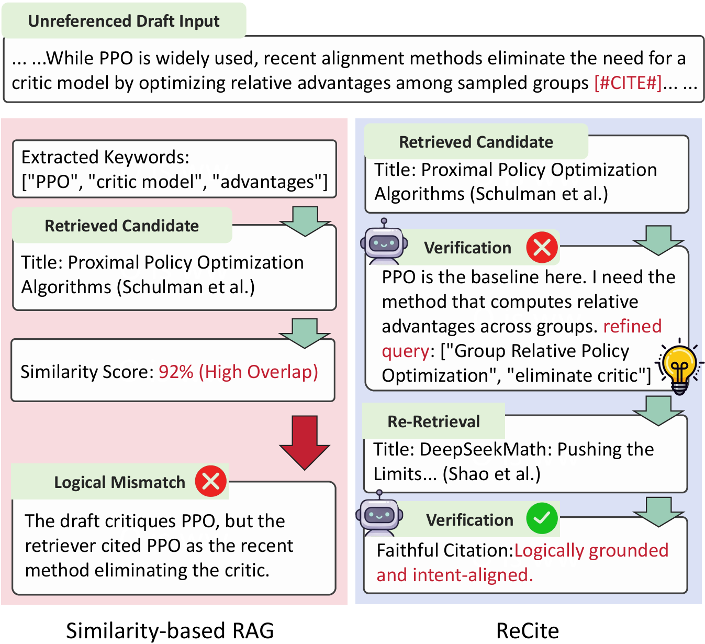
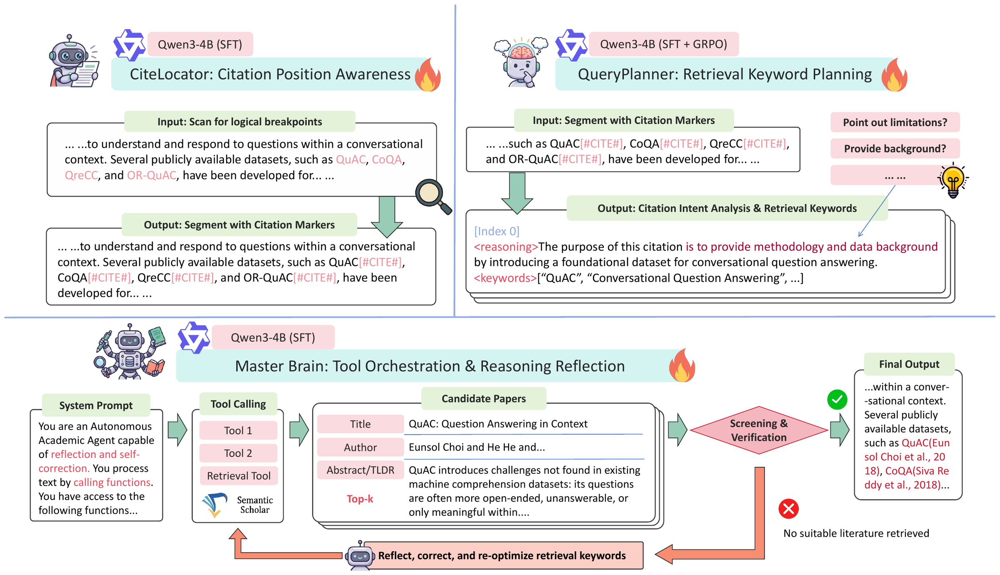
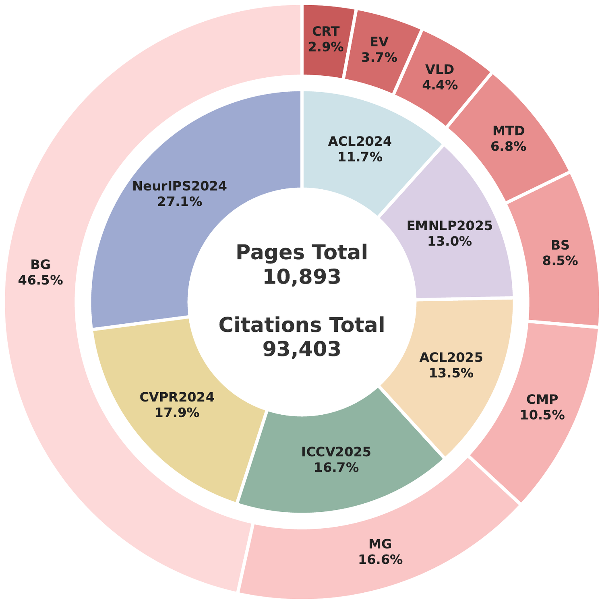
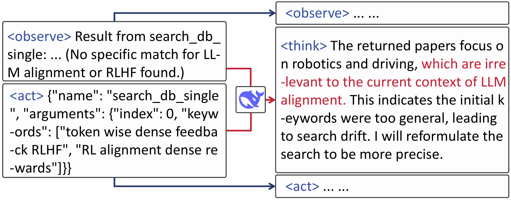
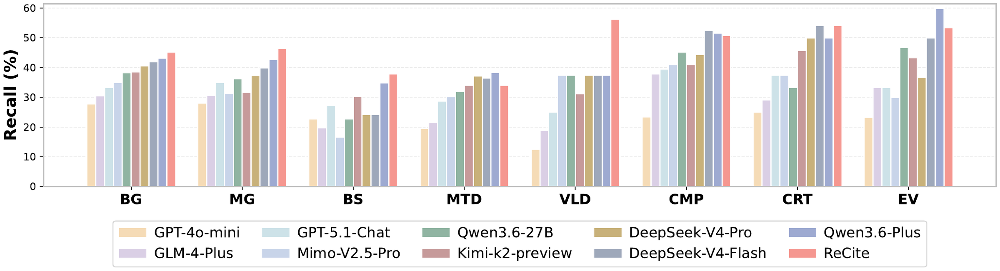
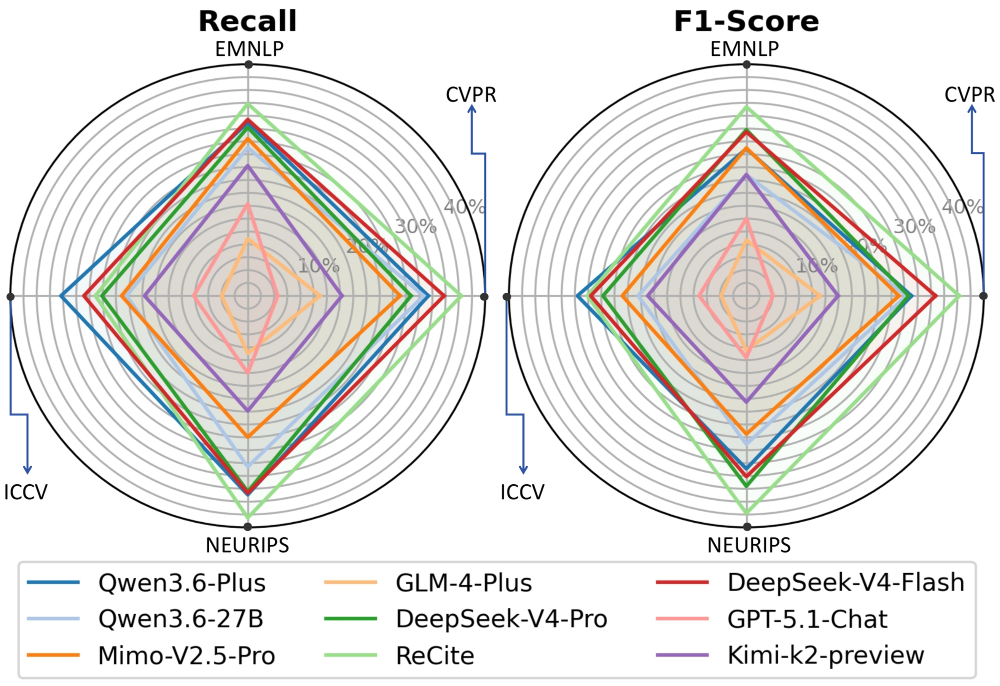
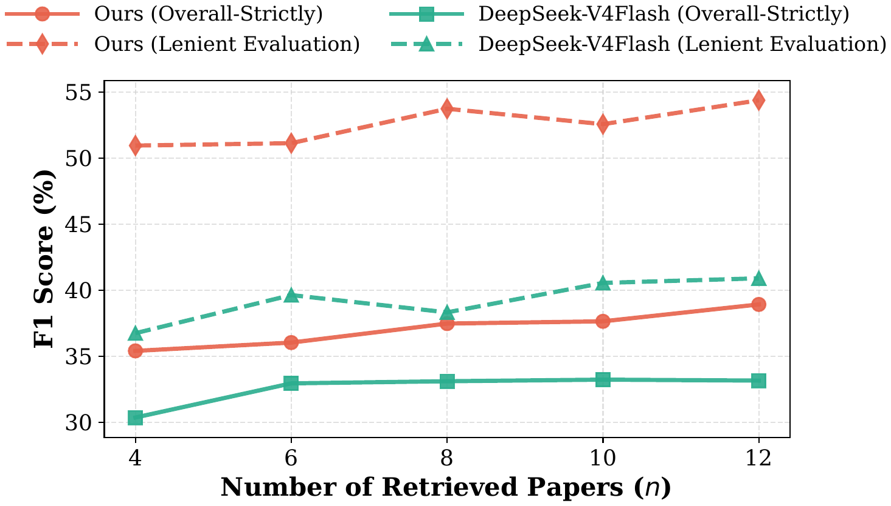

01
CiteLocator · SFT
Location perception
Predicts citation positions and labels each logical breakpoint Mandatory or Optional.
Overall F166.37%
Findings of EMNLP 2026
Agentic Reasoning for Faithful Citation
Similarity can retrieve a real paper — but a citation must prove the claim.
1Wuhan University · 2National University of Singapore
Motivation
Topical relevance can point to an authentic paper that still fails to logically support the author’s claim. ReCite starts from the question: what does a citation actually need to prove?

Citation requires logical support, not merely textual similarity. ReCite is a decoupled agentic framework that locates citation positions, plans intent-aware retrieval queries, and reflectively verifies whether each candidate supports the claim — re-retrieving when evidence is inconsistent. Built on Qwen3-4B with SFT and GRPO, ReCite achieves a Strict F1 of 39.15%, surpassing substantially larger generative models and general-purpose agents.
Method
ReCite turns citation into an observe–think–act workflow. Three specialized Qwen3-4B modules locate citation breakpoints, plan retrieval keywords, and verify candidates with reflective re-retrieval.

Figure 4. The decoupled ReCite architecture: CiteLocator, QueryPlanner, and Master Brain form an iterative loop of perception, planning, retrieval, verification, and reflection.
Predicts citation positions and labels each logical breakpoint Mandatory or Optional.
Infers citation intent and generates targeted retrieval keywords per citation position.
Orchestrates Semantic Scholar retrieval, verifies claim–evidence consistency, and re-queries on failure.
Data
Built from 10,893 LaTeX papers at top CS venues (2024–2025), the corpus provides three aligned subsets for location perception, intent reasoning, and reflective trajectories.


Figure 3. Synthesized reflective trajectories teach the agent to diagnose retrieval drift and issue a refined secondary query.
ReCite provides supervision beyond static context–reference pairs: it also records where citations appear, why they are needed, and how the agent should recover when retrieval fails.
| Capability | RefSeer | S2ORC | ReCite |
|---|---|---|---|
| Local context mapping | ✓ | ✓ | ✓ |
| Full-text structure | ✗ | ✓ | ✓ |
| Location perception | ✗ | ✗ | ✓ |
| Intent reasoning | ✗ | ✗ | ✓ |
| Reflective trajectories | ✗ | ✗ | ✓ |
Where a citation is needed
Why a particular work is cited
How to recover when retrieval drifts
Each citation is annotated with one of eight intent categories, which drives QueryPlanner’s retrieval-keyword generation and the verification criteria of the Master Brain.
| Abbr. | Category | Description |
|---|---|---|
| BG | Background | Provides background knowledge or information for the research domain. |
| MG | Motivation & Gap | Highlights research motivations or identifies gaps in existing literature. |
| CMP | Comparison | Compares the current work or other baselines with specific prior methods. |
| BS | Basis & Support | Provides theoretical foundations or concepts supporting the current study. |
| MTD | Method & Data | Refers to specific methods, algorithms, tools, or datasets utilized in the research. |
| VLD | Validation | Provides empirical evidence, results, or evaluation metrics to validate claims. |
| EV | Evolution | Describes the historical evolution or development of a methodology. |
| CRT | Critique | Expresses critiques, conflicts, or opposing views regarding prior work. |
Results
Evaluated on 200 held-out paragraphs and 1,023 unseen target papers from 2023–2025 top-venue submissions.

Figure 5. Recall across the CAP-8 citation intent categories.
End-to-end workflows are scored at three strictness levels: exact target match (Overall-Strictly), any logically supportive alternative (Lenient), and citation position only. ReCite-SFT (CAP-8) achieves the best Strict F1 even against 1.6T-scale generative baselines.
| Method | Size | Overall-Strictly | Lenient Evaluation | Position-Only | ||||||
|---|---|---|---|---|---|---|---|---|---|---|
| P↑ | R↑ | F1↑ | P↑ | R↑ | F1↑ | P↑ | R↑ | F1↑ | ||
| Zero-shot prompt pipelines | ||||||||||
| GLM-4-Plus | – | 9.83 | 10.27 | 10.05 | 17.22 | 17.99 | 17.60 | 47.08 | 49.19 | 48.11 |
| Mimo-V2.5-Pro | – | 26.40 | 27.72 | 27.04 | 29.19 | 30.63 | 29.89 | 75.07 | 78.78 | 76.88 |
| GPT-4o-mini | – | 7.20 | 8.65 | 7.86 | 12.73 | 15.29 | 13.89 | 44.89 | 53.90 | 48.98 |
| GPT-5.1-Chat | – | 8.99 | 12.12 | 10.32 | 14.48 | 19.54 | 16.63 | 35.32 | 47.64 | 40.57 |
| Kimi-k2-preview | – | 19.06 | 21.24 | 20.09 | 24.32 | 27.10 | 25.64 | 55.86 | 62.24 | 58.88 |
| Qwen3.6-Plus | – | 28.09 | 35.44 | 31.34 | 31.09 | 39.23 | 34.69 | 68.60 | 86.50 | 76.52 |
| Qwen3.6-27B | 27B | 22.89 | 29.62 | 25.83 | 25.58 | 33.08 | 28.85 | 62.34 | 80.48 | 70.26 |
| DeepSeek-V4-Flash | 284B | 31.23 | 35.21 | 33.10 | 34.52 | 38.89 | 36.57 | 72.95 | 82.11 | 77.26 |
| DeepSeek-V4-Pro | 1.6T | 31.29 | 32.28 | 31.77 | 35.25 | 36.34 | 35.79 | 75.97 | 78.32 | 77.13 |
| General agents (end-to-end via Mimo-V2.5-Pro) | ||||||||||
| Claude Code | – | 17.73 | 27.26 | 21.49 | 21.35 | 32.82 | 25.87 | 25.51 | 39.23 | 30.92 |
| Hermes Agent | – | 22.39 | 21.24 | 21.80 | 26.38 | 25.02 | 25.68 | 28.01 | 26.56 | 27.27 |
| OpenClaw | – | 18.09 | 7.03 | 10.12 | 25.25 | 9.81 | 14.13 | 29.42 | 11.43 | 16.46 |
| ReCite (Ours) | ||||||||||
| ReCite-Base | 4B | 36.92 | 35.75 | 36.33 | 43.46 | 42.08 | 42.76 | 89.80 | 86.11 | 87.53 |
| ReCite-SFT | 4B | 37.48 | 37.45 | 37.47 | 47.14 | 47.07 | 47.10 | 89.80 | 89.66 | 89.73 |
| ReCite-SFT (CAP-8) | 4B | 39.22 | 39.07 | 39.15 | 55.27 | 55.02 | 55.14 | 89.92 | 89.51 | 89.71 |
P / R / F1 scores (%). Bold blue marks the best value in each column; shaded rows are ReCite models. CAP-8 denotes fine-tuning with citation taxonomy information.

Figure 6. Cross-venue robustness across EMNLP, CVPR, ICCV, and NeurIPS test paragraphs.

Figure 7. Performance vs. the number of retrieved candidates. k = 8 balances evidence sufficiency and latency.
Evaluation
Each module is benchmarked separately against strong LLM and heuristic baselines, followed by a full ablation of the decoupled design.
CiteLocator must decide not only where a citation belongs, but whether it is Mandatory or Optional. It outperforms every LLM baseline in Overall F1 and narrows the gap to human-level placement.
| Model | Size | Strategy | Mandatory | Optional | Overall | ||||||
|---|---|---|---|---|---|---|---|---|---|---|---|
| P↑ | R↑ | F1↑ | P↑ | R↑ | F1↑ | P↑ | R↑ | F1↑ | |||
| Baseline models | |||||||||||
| GPT-5.1-Chat | – | Direct | 22.01 | 59.72 | 32.17 | 9.21 | 58.50 | 15.92 | 27.73 | 59.39 | 37.81 |
| GPT-4o-mini | – | Direct | 24.62 | 53.61 | 33.75 | 11.34 | 57.17 | 18.92 | 31.25 | 54.57 | 39.74 |
| Kimi-k2-preview | – | Direct | 31.27 | 61.05 | 41.36 | 14.36 | 61.28 | 23.27 | 38.38 | 61.11 | 47.15 |
| MiniMax-M2.5 | – | Direct | 33.52 | 56.37 | 42.04 | 14.71 | 52.52 | 22.98 | 40.35 | 55.34 | 46.67 |
| GLM-4-flash | – | Direct | 25.81 | 16.73 | 20.30 | 12.07 | 17.96 | 14.43 | 32.67 | 17.06 | 22.41 |
| Qwen3-Max | – | Direct | 32.87 | 28.90 | 30.75 | 15.41 | 29.28 | 20.19 | 40.18 | 29.00 | 33.69 |
| Qwen3-Max | – | CoT | 34.43 | 28.42 | 31.14 | 16.00 | 28.09 | 20.39 | 41.71 | 28.33 | 33.74 |
| DeepSeek-V3 | 671B | Direct | 30.91 | 62.66 | 41.40 | 13.91 | 61.65 | 22.70 | 37.85 | 62.39 | 47.12 |
| DeepSeek-V3 | 671B | CoT | 29.23 | 49.09 | 36.64 | 12.41 | 45.88 | 19.54 | 35.68 | 48.23 | 41.02 |
| Qwen3.5-27B | 27B | Direct | 36.13 | 55.86 | 43.88 | 15.83 | 50.56 | 24.11 | 42.98 | 54.44 | 48.04 |
| Qwen3-4B | 4B | Direct | 13.98 | 9.70 | 11.45 | 5.55 | 9.56 | 7.03 | 18.12 | 9.66 | 12.60 |
| Qwen3-4B | 4B | CoT | 8.98 | 3.99 | 5.52 | 2.59 | 2.92 | 2.74 | 11.12 | 3.70 | 5.55 |
| ReCite | |||||||||||
| CiteLocator | 4B | Direct | 67.93 | 60.61 | 64.06 | 42.90 | 58.57 | 49.52 | 74.16 | 60.06 | 66.37 |
P / R / F1 scores (%). CiteLocator reports Precision, Recall, and F1 for Mandatory, Optional, and Overall categories.
QueryPlanner is evaluated on the quality of its reasoning trace and the keywords it extracts. GRPO lifts reasoning F1 close to DeepSeek-V3’s level while using only 4B parameters.
| Model | Size | Reasoning | Keyword extraction | |||||
|---|---|---|---|---|---|---|---|---|
| R-F1↑ | R-Jdg↑ | K-F1↑ | K-TR↑ | K-PR↑ | K-Jac↑ | K-Jdg↑ | ||
| Baseline models | ||||||||
| GPT-5.1-Chat | – | 52.25 | 7.48 | 39.05 | 44.03 | 12.16 | 7.87 | 6.26 |
| MiniMax-M2.5 | – | 53.88 | 7.86 | 41.19 | 47.19 | 13.73 | 8.75 | 6.53 |
| Qwen3-Max | – | 53.91 | 7.33 | 37.01 | 36.56 | 15.38 | 10.83 | 5.95 |
| GLM-4-flash | – | 21.73 | 3.04 | 16.09 | 19.95 | 6.65 | 3.98 | 2.63 |
| Kimi-k2-preview | – | 54.12 | 7.75 | 45.80 | 55.30 | 25.45 | 16.42 | 7.12 |
| DeepSeek-V3 | 671B | 58.63 | 7.88 | 46.25 | 49.18 | 22.59 | 15.13 | 6.65 |
| Qwen3.5-27B | 27B | 50.55 | 7.56 | 40.99 | 43.62 | 16.73 | 11.14 | 6.33 |
| ReCite | ||||||||
| QueryPlanner (SFT) | 4B | 56.12 | 7.21 | 37.74 | 43.56 | 16.87 | 10.38 | 5.93 |
| QueryPlanner (SFT + GRPO) | 4B | 57.81 | 7.64 | 39.06 | 42.47 | 17.85 | 11.00 | 6.44 |
Reasoning R-F1: token-level F1 of the generated reasoning; R-Jdg / K-Jdg are LLM-as-a-judge scores. Keyword metrics cover token F1 (K-F1), token recall (K-TR), phrase recall (K-PR), and Jaccard similarity (K-Jac).
On an unseen citation-location benchmark, CiteLocator generalizes beyond CS-specific rhetorical signals and beats heuristic baselines on fine-grained placement.
| Type | Method | P↑ | R↑ | F1↑ |
|---|---|---|---|---|
| Coarse-grained | ||||
| Scientist | 76.2 | 88.4 | 81.8 | |
| GM-s2orc | 78.2 | 78.2 | 78.2 | |
| GM-s2orc-H | 80.2 | 82.6 | 81.4 | |
| CiteLocator | 66.7 | 87.0 | 75.5 | |
| Fine-grained | ||||
| Scientist | 57.5 | 66.6 | 61.7 | |
| GM-s2orc | 44.9 | 44.9 | 44.9 | |
| GM-s2orc-H | 49.2 | 50.7 | 50.0 | |
| CiteLocator | 46.7 | 60.9 | 52.8 | |
Values are percentages. “-H” indicates extra heuristic rules.
Each module is individually replaced by the Qwen3-4B-Instruct baseline. Location perception is foundational; intent-aware planning is indispensable; reflective verification mainly improves Lenient F1.
| Method | Overall-Strictly | Lenient Evaluation | ||||
|---|---|---|---|---|---|---|
| P | R | F1 | P | R | F1 | |
| ReCite | 37.48 | 37.45 | 37.47 | 47.14 | 47.07 | 47.10 |
| w/o CiteLocator | 2.98 | 2.55 | 2.75 | 7.05 | 6.02 | 6.49 |
| w/o QueryPlanner | 15.79 | 15.75 | 15.77 | 30.88 | 30.81 | 30.85 |
| w/o Master Brain | 36.92 | 35.75 | 36.33 | 43.46 | 42.08 | 42.76 |
Replaced modules use the Qwen3-4B-Instruct baseline. Removing CiteLocator or QueryPlanner causes severe drops; removing Master Brain’s reflective verification mainly hurts Lenient F1.
Citation
@inproceedings{huang2026recite,
title = {ReCite: Agentic Reasoning for Faithful Citation},
author = {Huang, Yuyang and Li, Bobo and Song, Jiajia and Ding, Yuzhe
and Teng, Chong and Li, Fei and Ji, Donghong},
booktitle = {Findings of the Association for Computational Linguistics:
EMNLP 2026},
year = {2026}
}